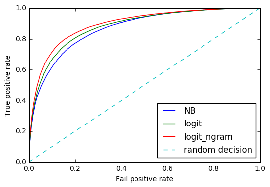

Sentiment Analysis on Twitter
March 10, 2017
Abstract
We perform sentimental analysis (classification) on 400000 tweets from twitter. Our baseline model is multinomial naive bayes classifier. Then we try to improve the classifier not only by introducing algorithms with higher performance on large scale datasets such as logistic regression and support vector machine but also on linguistic level like n-gram, emoji analysis and annotation.
Introduction
Sentiment analysis, also called opinion mining, is the process of using the technique of natural language processing, text analysis, computational linguistics to determine the emotional tone or the attitude that a writer or a speaker express towards some entity. As millions of text are generated on the Internet everyday, the application of sentiment analysis becomes more powerful and broad. For example, social media monitoring allows us to gain an overview of the wider public opinion behind certain topics, and the sentiment analysis for customers review delivers the satisfaction metric to the company, which makes it possible for them to improve their products and service. It also has been applied widely in the field of market where it can be applied to forecast market movement based on news, blogs and social media sentiment. In our project, we combine the technique of text analysis and machine learning to perform sentiment classification on the twitter sentiment corpus.
Material
Data Source
We choose Twitter Sentiment Analysis Dataset as our training and test data where the data sources are University of Michigan Sentiment Analysis competition on Kaggle and Twitter Sentiment Corpus by Niek Sanders. The reason why we use this dataset is that it contains 1,578,627 classified tweets from sentimental annotation which is huge enough for model building and hyperparameter tuning. Ibrahim Naji who is the author of the blog where we got the data has tried simple Naive Bayesian classification algorithm and the result were 75% which is a good baseline for us to compare and improve.
Challenges
- Tweets are always unstructured
- None vocabulary word such as emoji and emoticon.
- Lexical variation such as tmrw representing tomorrow,
Methodologies
As we all know, tweet has 140-character count limitations so they are different from those documentations that have no length limits. On top of that, unlike the usual text documentation, the tweet message has its own unique features, such as the prevalent usage of emoticons and elongated words (eg. goooood), which distinguishes itself from other text genres. Hence it is important to standardize the text and remove noise information through some pre-processing steps.
Preprocessing
Emoticons
Emoticons are used broadly throughout the Internet. However, the default setting of tokenization of nltk will treat each individual punctuation to be a token and therefore decompose the emoticons. So the first step is to identify the emoticons in each text and transform them to a single word. However this uniform transformation for each emoticon has such disadvantage that it ignores the ambiguity of emoticons. For example, the smiley face “:)” can have multiple meanings, either expressing happiness or just used by people to soften the tone. But this is the best solution we have come up with so far therefore we accept this consequence of ambiguity.
Hashtags
A hashtag is a word or an un-spaced phrase prefixed with the hash symbol (#), which is used to indicate the topics. It is uncertain whether or not the hashtags contain sentiment information and it is also difficult to tokenize since often times phrase in a hashtag is un-spaced. Thus, we decide to uniformly replace every hashtag by a pattern “HASH_(whatever in the hashtag)”
Handles
Handles are used to direct the twitter towards other users by writing their usernames preceded by ‘@’. No transformation is needed since usernames can be directly seperated by “@” and treated as proper nouns.
URLs
Links are very common in the twitters for sharing assorted resources. Each link is replaced by a word “URL” and treated as a proper noun.
Elongated Words
People tend to use repeating characters in colloquial language, which delivers certain sentiment. But the problem is that some elongated words might derive from the same word but have different numbers of repeating characters. Therefore, we used regular expression to replace characters repeating more than twice as two characters.
Negation
The occurrence of negation can completely change the sentiment of the whole sentence. There are several ways to handle negation, one of which is to suffix “_NEG” to all the words that appear after the negation words until the punctuation. In addition, we also learned that negation handling is way more complicated than that and people have done some research regrading detection of explicit negation cues and the scope of negation of these words. However, our analysis showed that “_NEG” appending can only improve the prediction accuracy by 0.5% compared to the unigram baseline model. Moreover, later experiment indicates that the combination of unigram, bigram and trigram can significantly improve the prediction performance and we assume that such N-gram model can capture the negation characteristics. Computational capabilities are also important and we discovered such modification requires changes for some default behavior of tokenizer (we use scikit-learn in python) and notably slowed down the computation. So we decided not to handle the negations.
Stop Words
Stop words usually refer to the most common words in a language, such as “a”, “the” and “is” in English. Removing stop words are a common step in text processing. However, it has been demonstrated in recent years that the removal of stop words is not a necessary step and may have undesirable effect on the classifier. In fact, our preliminary experiment deprecated such action as the testing accuracy decreased by 2%.
Stem
In linguistics, a stem is a part of a word. Different words can be derivative of the same stem. For example, the word “interest” is the stem of both “interesting” and “interested”. Consequently, stemming refers to the procedure of replace every word by its stem. However, our considerations is that tweets are very short so we choose not to perform stemming since we want to reserve as many features as possible. Nevertheless, we do think it is a necessary step to do in the case of long documents in order to reduce the features and improve classification performance.
Bag of Words Model
The bag-of-words model is a simplifying representation used in natural language processing. In this model, a text is represented as the collection of its words, disregarding grammar and even word order but keeping multiplicity. One can also consider bag of bigram and trigram tokens as it can retain some local information in the text. It is also worth pointing out it is better to use pointwise mutual information (PMI) to select those N-gram patterns that are more likely to occur together. But we abstained from doing so as it is too computational expensive.
Tf Idf Transformation
After bag-of-words tokenization, each text ends up to be a set of words with corresponding counts. The simple counts representation has such a disadvantage that the longer document tends to have larger counts for some words. In order to fix this, it is better to divide the counts by the size of the document, then the counts become term frequency (tf). Another consideration is inverse document-frequency (idf). In a large text corpus, some words will be very present (e.g. “the”, “a”, “is” in English) hence carrying very little meaningful information about the actual contents of the document. The idf is defined as $$idf(t) = \log{\frac{n_d}{1+df(d, t)}}$$, where the \(n_d\) is the total number of documents, and \(df(d,t)\) is the number of documents that contain term t and “1” is just the smoothing term. Therefore, idf will make the rarer words more informative for certain type of documents. Then the tf-idf is just the product of the two components. We decided to use idf since it had improvement over the logistic regression unigram model.
Annotation
There are several famous lexicons online that contain sentiment words chosen by linguists. The one we chose is called AFINN list, including 2477 words, each of which also has a sentiment score on a scale of -5 to 5 (from negative to positive). We matched each word in all the tweets message and computed the sum of sentiment score for each text. It turned out the logistic regression could achieve 61.14% prediction accuracy based on this single attribute. Afterwards, we appended attribute to the unigram bag-of-word matrix we obtained before and used logistic regression to retrain the model. The prediction accuracy on test is 81.96%, improving the logistic regression baseline slightly by 1%. However, the computation became more time consuming later on expecially for SVM and we thought the reason might be that the new attribute somehow destructed the sparsity of data matrix. Finally, we determined to ignore this attribute since it had disadvantage in computation capacity and only had small improvement.
Machine Learning Models
Naive Bayes
Naive Bayes is a generative model that makes the bag of words assumption (position doesn’t matter) and the conditional independence assumption (words are conditionally independent of each other given the class). The high bias and low variance model is a very common baseline and can do surprisingly well for small data sets.
Logistic Regression
Logistic regression, also called maximum entropy model, is a discriminative model with good computational performance for large linearly seperated data sets.
SVM
Support vector machines (SVMs) are supervised learning models that can have very high performance in high dimensional spaces, therefore it can be very effective in text classification.
Result
Accuracy Report:
| Model | Feature | Accuracy |
|---|---|---|
| MultiNB | N/A | 78.15% |
| Logistic | N/A | 80.22% |
| SVM | N/A | 80.71% |
| MultiNB | Negation | 78.66% |
| MultiNB | stopwords | 76.68% |
| Logistic | Ngram(1-3) | 82.08% |
| SVM | Ngram(1-3) | 84.62% |
SVM Report:
| Precision | Recall | F1 score | |
|---|---|---|---|
| 0 | 0.83 | 0.86 | 0.85 |
| 1 | 0.86 | 0.83 | 0.84 |
ROC Curve:

From the tables above we can easily find that SVM and Logistic Regression are both better than Naive Bayes and they perform almost the same for our dataset. This is obviously true because the high bias low variance classifiers like Naive Bayes work well only in small dataset(< 10000).
When introducing some feature engineering process such as emoji changing and negation, the accuracy remains almost the same and removing stop words even cause the accuracy decreasing by 2%. It tells us that stop words are informative especially in short text like tweets.
Mixing unigram with bigram and trigram seems to a significant improvement for logistic(2%) and SVM(4%). Here we discard Navie Beyes since it is not proper for our data based on early discussions.
Summary and Future
The best combination of algorithm and feature engineering method is SVM + Mixed Ngram. SVM with linear kernal is good both on binary text classification and computational performance while bag of single word analysis is not informative enough.
In the future, we are going to perform multinomial classification such as positive, neutral and negative and also train different models for different topic.
A Small Sample of Code
import pandas as pd
import numpy as np
from sklearn.model_selection import train_test_split
from sklearn.pipeline import Pipeline
from sklearn.feature_extraction.text import TfidfTransformer, TfidfVectorizer
from sklearn.feature_extraction.text import CountVectorizer
from sklearn.naive_bayes import MultinomialNB
from sklearn.linear_model import LogisticRegression
from sklearn.svm import SVC, LinearSVC
from sklearn.neural_network import MLPClassifier
from sklearn.model_selection import GridSearchCV
from nltk.corpus import stopwords
import nltk
import re
from sklearn.metrics import roc_curve, auc
from sklearn.metrics import classification_report
import matplotlib.pyplot as plt
Randomly select about 25% of original dataset and split it into training(80%) and test(20%).
whole_data = pd.read_csv('Sentiment Analysis Dataset.csv', header=0, error_bad_lines=False)
b'Skipping line 8836: expected 4 fields, saw 5\n'
b'Skipping line 535882: expected 4 fields, saw 7\n'
whole_data.shape
(1578612, 4)
idx = np.random.randint(0,1578612,400000)
reduce_data = whole_data.loc[idx]
data_train, data_test = train_test_split(reduce_data, test_size = 0.2)
train = data_train[['Sentiment', 'SentimentText']].reset_index().drop('index', axis=1)
test = data_test[['Sentiment', 'SentimentText']].reset_index().drop('index', axis=1)
test.head()
| Sentiment | SentimentText | |
|---|---|---|
| 0 | 0 | One of my best friends gave birth 2 weeks ago ... |
| 1 | 0 | @Diana_Rosalien haha HELLO! i'm home! and i go... |
| 2 | 1 | @jamie_oliver had a nice weekend, didnt do muc... |
| 3 | 1 | @Adman500 Haha, thankyou very much |
| 4 | 0 | @denifty I'm really sorry. I thought updates w... |
train['Sentiment'].sum()
160378
train.to_csv('train.csv')
test.to_csv('test.csv')
Vectorization on each twiiter shorttext.
def feature_transform(sent):
out = sent
# feature set: emoji, hashtag, url(hyperlink), "I’m in a hurrryyyyy"
feature_set = {r':-\)|:\)|\(:|\(-:': 'smile', \
r':-D|:D|X-D|XD|xD': 'laugh', \
r'<3|:\*': 'kiss', \
r';-\)|;\)|;-D|;D|\(;|\(-;': 'wink', \
r':-\(|:\(|\(:|\(-:': 'frown', \
r':,\(|:\'\(|:"\(|:\(\(': 'cry',\
r'#(\w+)': r'HASH_\1', \
r'(http|https|ftp)://[a-zA-Z0-9\\./]+': 'URL', \
r'(.)\1{1,}': r'\1\1'}
for key, value in feature_set.items():
#print(key, value)
out = re.sub(key, value, out)
return out
test.ix[4,'SentimentText']
"@denifty I'm really sorry. I thought updates were free for touch users too "
MultiNB
test = pd.read_csv('test.csv', header = 0)
y_test = test.Sentiment
X_test = test.SentimentText
train = pd.read_csv('train.csv', header = 0)
y = train.Sentiment
X = train.SentimentText
text_clf = Pipeline([('vect', CountVectorizer()), \
('tfidf', TfidfTransformer()), \
('clf', MultinomialNB())])
text_clf.fit(X,y)
Pipeline(steps=[('vect', CountVectorizer(analyzer='word', binary=False, decode_error='strict',
dtype=<class 'numpy.int64'>, encoding='utf-8', input='content',
lowercase=True, max_df=1.0, max_features=None, min_df=1,
ngram_range=(1, 1), preprocessor=None, stop_words=None,
strip...inear_tf=False, use_idf=True)), ('clf', MultinomialNB(alpha=1.0, class_prior=None, fit_prior=True))])
pred = text_clf.predict(X_test)
acc_NB = np.mean(pred == y_test)
acc_NB
0.78158749999999999
Logistic
text_clf = Pipeline([('vect', CountVectorizer()), \
('tfidf', TfidfTransformer()), \
('clf', LogisticRegression())])
text_clf.fit(X,y)
Pipeline(steps=[('vect', CountVectorizer(analyzer='word', binary=False, decode_error='strict',
dtype=<class 'numpy.int64'>, encoding='utf-8', input='content',
lowercase=True, max_df=1.0, max_features=None, min_df=1,
ngram_range=(1, 1), preprocessor=None, stop_words=None,
strip...ty='l2', random_state=None, solver='liblinear', tol=0.0001,
verbose=0, warm_start=False))])
pred = text_clf.predict(X_test)
logit_NB = np.mean(pred == y_test)
logit_NB
0.8021625
logistic with Ngram
text_clf = Pipeline([('vect', CountVectorizer(ngram_range=(1,3))), \
('tfidf', TfidfTransformer()), \
('clf', LogisticRegression())])
text_clf.fit(X,y)
Pipeline(steps=[('vect', CountVectorizer(analyzer='word', binary=False, decode_error='strict',
dtype=<class 'numpy.int64'>, encoding='utf-8', input='content',
lowercase=True, max_df=1.0, max_features=None, min_df=1,
ngram_range=(1, 3), preprocessor=None, stop_words=None,
strip...ty='l2', random_state=None, solver='liblinear', tol=0.0001,
verbose=0, warm_start=False))])
pred = text_clf.predict(X_test)
logit_NB_ngram = np.mean(pred == y_test)
logit_NB_ngram
0.82082500000000003
SVM
text_clf = Pipeline([('vect', CountVectorizer(ngram_range=(1,3))), \
('tfidf', TfidfTransformer()), \
('clf', LinearSVC())])
text_clf.fit(X,y)
Pipeline(steps=[('vect', CountVectorizer(analyzer='word', binary=False, decode_error='strict',
dtype=<class 'numpy.int64'>, encoding='utf-8', input='content',
lowercase=True, max_df=1.0, max_features=None, min_df=1,
ngram_range=(1, 3), preprocessor=None, stop_words=None,
strip...ax_iter=1000,
multi_class='ovr', penalty='l2', random_state=None, tol=0.0001,
verbose=0))])
pred_svm = text_clf.predict(X_test)
svm_ngram = np.mean(pred == y_test)
svm_ngram
0.84617500000000001
Hypeparameter tuning
parameters = {'clf__C':(0.01,0.1,1,10)}
%%time
gs_clf = GridSearchCV(text_clf, parameters, n_jobs=-1, cv=2)
gs_clf_result= gs_clf.fit(X[:100000],y[:100000])
CPU times: user 16.2 s, sys: 941 ms, total: 17.2 s
Wall time: 1min 12s
%%time
clf = text_clf
clf.fit(X, y)
CPU times: user 53.5 s, sys: 3.17 s, total: 56.6 s
Wall time: 57.7 s
gs_clf_result.best_score_
gs_clf_result.best_params_
{'clf__C': 1}
SVM Classification report
print(classification_report(y_test,pred_svm))
precision recall f1-score support
0 0.83 0.86 0.85 39962
1 0.86 0.83 0.84 40038
avg / total 0.85 0.85 0.85 80000
ROC Curve
text_clf = Pipeline([('vect', CountVectorizer()), \
('tfidf', TfidfTransformer()), \
('clf', MultinomialNB())])
text_clf.fit(X,y)
Pipeline(steps=[('vect', CountVectorizer(analyzer='word', binary=False, decode_error='strict',
dtype=<class 'numpy.int64'>, encoding='utf-8', input='content',
lowercase=True, max_df=1.0, max_features=None, min_df=1,
ngram_range=(1, 1), preprocessor=None, stop_words=None,
strip...inear_tf=False, use_idf=True)), ('clf', MultinomialNB(alpha=1.0, class_prior=None, fit_prior=True))])
Y_test_prob = text_clf.predict_proba(X_test)[:,1]
fpr_nb, tpr_nb, thresholds_nb =roc_curve(y_test,Y_test_prob)
text_clf = Pipeline([('vect', CountVectorizer()), \
('tfidf', TfidfTransformer()), \
('clf', LogisticRegression())])
text_clf.fit(X,y)
Pipeline(steps=[('vect', CountVectorizer(analyzer='word', binary=False, decode_error='strict',
dtype=<class 'numpy.int64'>, encoding='utf-8', input='content',
lowercase=True, max_df=1.0, max_features=None, min_df=1,
ngram_range=(1, 1), preprocessor=None, stop_words=None,
strip...ty='l2', random_state=None, solver='liblinear', tol=0.0001,
verbose=0, warm_start=False))])
Y_logit_prob = text_clf.predict_proba(X_test)[:,1]
fpr_logit, tpr_logit, thresholds_logit =roc_curve(y_test,Y_logit_prob)
text_clf = Pipeline([('vect', CountVectorizer(ngram_range=(1,3))), \
('tfidf', TfidfTransformer()), \
('clf', LogisticRegression())])
text_clf.fit(X,y)
Pipeline(steps=[('vect', CountVectorizer(analyzer='word', binary=False, decode_error='strict',
dtype=<class 'numpy.int64'>, encoding='utf-8', input='content',
lowercase=True, max_df=1.0, max_features=None, min_df=1,
ngram_range=(1, 3), preprocessor=None, stop_words=None,
strip...ty='l2', random_state=None, solver='liblinear', tol=0.0001,
verbose=0, warm_start=False))])
Y_logit_ngram_prob = text_clf.predict_proba(X_test)[:,1]
fpr_logit_ngram, tpr_logit_ngram, thresholds_logit_ngram =roc_curve(y_test,Y_logit_ngram_prob)
plt.plot(fpr_nb, tpr_nb, label='NB')
plt.plot(fpr_logit, tpr_logit, label='logit')
plt.plot(fpr_logit_ngram, tpr_logit_ngram, label='logit_ngram')
plt.plot([0, 1], [0, 1], '--', label='random decision')
plt.xlabel('Fail positive rate')
plt.ylabel('True positive rate')
plt.legend(loc=4)
plt.show()
auc(fpr_logit,tpr_logit)
0.86817554821593235